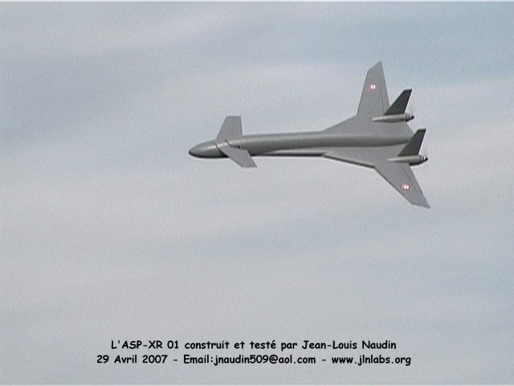
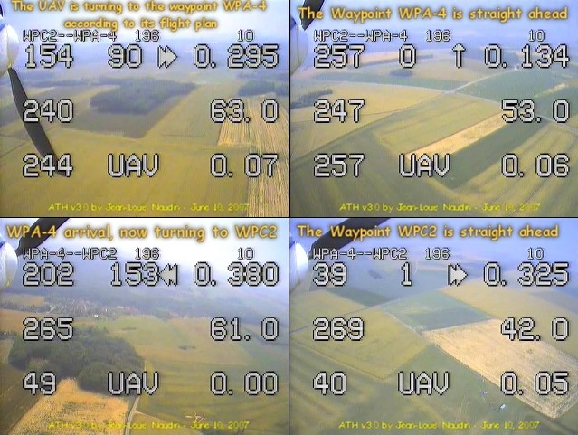
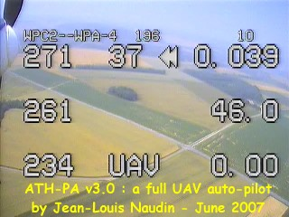
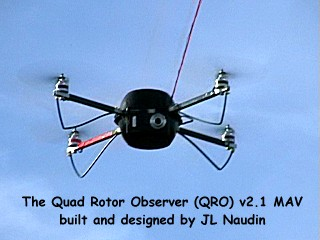
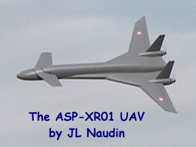
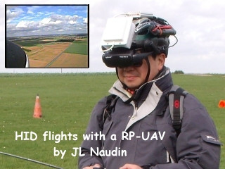
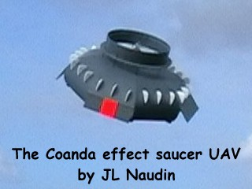
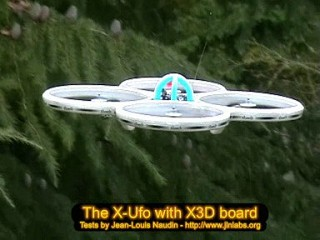
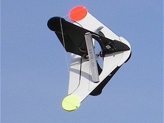
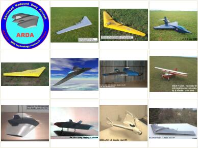

Picture of the day : The flight of the UAV ASP-XR01 and the Head Up Display (ATH)...

Autonomous UAV flight with the ATH-PA v3.0

The Quad Rotor Observer (QRO) MAV

The test flight of the ASP-XR01

HID flights with a RP-UAV (VIDEO)

The Coanda effect saucer UAV project

The advanced X-UFO quadricopter

The VATR 01, a VTOL UAV

The JLN's UAV collection